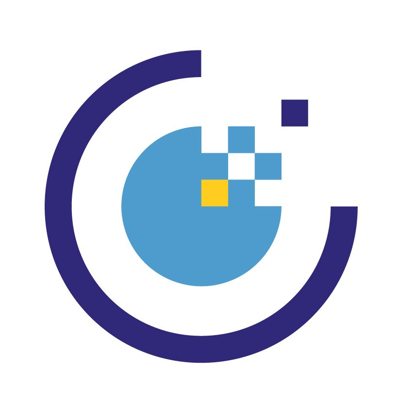

Layers
Base Maps
Opacity
Markers
Data sources



Map tiles © OpenStreetMap contributors
| Satellite © Esri
| Data: Austria demography (GeoJSON)
| Icons:
marker.png
Please respect each provider's terms of use and attribution requirements.